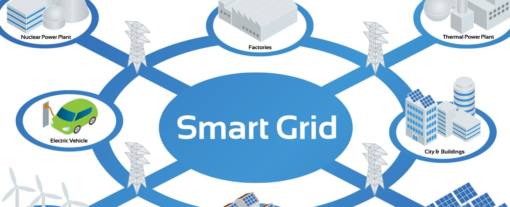

Field to platform
Smart Meter Solutions & AMI
Support advanced metering infrastructure programs by aligning meter data flows, communication components and enterprise integration needs.
Discuss AMI requirements →GECE supports electricity utilities with smart-metering and meter-data capabilities that help connect field devices to head-end platforms, meter data management and downstream business systems. Our focus is on data quality, integration and practical utility workflows across the smart metering lifecycle.
Smart meters can generate frequent, detailed information about consumption and network conditions. To create operational value, utilities need dependable data collection, validation, exception management and integration with systems used by billing, customer service, revenue protection and planning teams.
GECE's smart meter solutions bring together Advanced Metering Infrastructure (AMI), Automatic Meter Reading (AMR), Head-End System (HES) integration, Meter Data Management System (MDMS) workflows and utility application integration. Implementation scope is tailored to the utility's existing meter technology, communication environment, platforms and project requirements.

Modular capability areas that can be aligned with the architecture, devices and operating model of each utility.
Support advanced metering infrastructure programs by aligning meter data flows, communication components and enterprise integration needs.
Discuss AMI requirements →Support integration between meter head-end platforms and downstream systems, with attention to data completeness, exceptions and interface reliability.
Discuss HES integration →Organize meter-data workflows for validation, estimation and editing, exception review, consumption analysis and controlled downstream data sharing.
Discuss MDMS workflows →Validation and exception workflows can help teams identify missing, delayed or unusual readings before data is used by downstream processes.
Structured interfaces can help deliver approved meter data to billing and customer systems, reducing manual hand-offs where supported by the architecture.
Consistent meter data can support usage patterns, load profiles, exception analysis and reporting for utility operations.
Rule-based and AI-assisted analytics may help prioritize unusual consumption patterns for review, subject to data quality and operational validation.
Meter data can be aligned with customer, billing, GIS, asset and analytics systems through governed interfaces and agreed data models.
Modular integration and clear data ownership help utilities evolve their smart metering ecosystem as requirements and device volumes grow.
Smart Meter Solutions cover the technology and workflows used to collect, manage, validate and use data from smart electricity meters, including integration with head-end platforms, meter data management and utility business applications.
AMI refers to the broader advanced metering infrastructure ecosystem. A Head-End System (HES) commonly communicates with meters and collects meter data. A Meter Data Management System (MDMS) manages meter readings and related data quality workflows for use by downstream utility systems. The exact boundaries depend on the utility architecture and vendor platforms.
Yes, integration can be designed through supported APIs, web services, files or other agreed interfaces, depending on the existing systems, data model, security requirements and project scope.
AI-assisted analytics can help identify unusual consumption patterns, support load forecasting and prioritize exceptions. Results depend on the quality and coverage of the data and should be reviewed through accountable utility workflows.